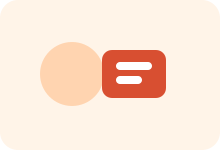

Professional Traits
The strengths that help me work better with teams, data, and real project deadlines.
I combine structured thinking, collaboration, and adaptability to deliver clear outcomes in analytics and dashboard projects.

Breaks complex problems into clear and manageable steps.
Collaborates effectively and contributes with shared ownership.
Learns quickly and adjusts smoothly to new tools and workflows.
Presents findings through simple, structured, and clear storytelling.
Connects data patterns to practical decisions and actions.
Maintains quality and focus across learning and project execution.